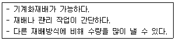

종자기능사 (2014-07-20 기출문제)
1과목: 종자(임의구분)
1. 안전저장을 위한 종자의 최대수분함량이 가장 적은 것은?
- 고추
- 콩
- 옥수수
- 시금치
(정답률: 67%)

2. 종자에 대한 설명으로 틀린 것은?
- 배주가 발달하여 종자가 된다.
- 벼, 보리, 옥수수 등은 무배젖 종자이다.
- 저장물질에 의해서 구분할 때 깨, 아주까리 등은 지방종자이다.
- 증식용ㆍ재배용 또는 양식용으로 쓰이는 씨앗ㆍ버섯ㆍ종균ㆍ영양체 또는 포자를 말한다.
(정답률: 76%)
3. 공기 조건이 종자 발아에 미치는 영향에 대한 설명으로 틀린 것은?
- 발아 중에는 종자의 호흡이 크게 증가한다.
- 대부분 식물의 종자는 발아에 있어서 산소는 절대적으로 필요하다.
- 대부분 식물의 종자에서 질소가스는 종자 발아에 영향을 미친다.
- 대부분 식물의 종자에서 0.3% 이상의 이산화탄소는 발아에 유해하다.
(정답률: 58%)
4. 작물의 수확 및 탈곡시 기계적 손상을 최소화할 수 있는 작물별 종자의 수분함량으로 가장 적절하지 않은 것은?
- 옥수수 : 20~25%
- 벼 : 17~23%
- 콩 : 14%
- 밀 : 25~30%
(정답률: 59%)
5. 종피 파상에 의한 휴면타파 방법이 아닌 것은?
- 기계적 파상
- 적색광 처리
- 화학물질의 처리
- 셀룰라제, 펙티나제 등의 효소처리
(정답률: 63%)
6. 휴면 중인 배(胚)에 저온처리를 하여 휴면이 타파될 때 수반되는 생리적 변화로 틀린 것은?
- 삼투압이 증가한다.
- 효소의 활력이 떨어진다.
- 불용성 물질이 분해되어 가용성 물질로 변화된다.
- 아미노산ㆍ당류 등과 같은 간단한 유기물질이 집적된다.
(정답률: 68%)
7. 수정과 결질에대한 설명으로 틀린 것은?
- 성숙한 화분이 암술머리에 붙는 현상을 수분이라고 하며, 웅핵과 난핵 그리고 웅핵과 극핵이 융합되는 현상을 수정이라고 한다.
- 피자식물에서는 2개의 웅핵중 1개가 난핵과 합쳐서 2n상태의 배유를 만들고, 다른 1개의 웅핵이 극핵과 합쳐서 3n상태의 배를 만든다.
- 2개의 웅핵이 한 배낭에 들어가 각각 난핵 및 극핵과 융합하는 현상을 중복수정이라고 한다.
- 배와 배유는 다음세대에 속하지만 종피나 과피는 모체의 일부이기 때문에 이들의 유선조성은 서로 다르다.
(정답률: 62%)
8. 종자를 정선한 후 실시하는 종자처리(種子處理)의 목적에 관한 내용과 가장 거리가 먼것은?
- 종자전염병균이나 해충을 방제하기 위한 종자소독
- 토양 또는 공기를 통하여 전염하는 병균이나 해충으로부터 유식물을 보호하기 위한 처리
- 적정한 온도처리를 통해 저장을 용이하게 하기 위한 처리
- 종자의 발아속도 및 균일성 향상을 위한 특수 처리
(정답률: 49%)
9. 다음 중 발아율이 가장 낮은 것은?
- 당근
- 호박
- 배추
- 양배추
(정답률: 63%)
10. 종자를 소독하는 방법에 해당하지 않는 것은?
- 약제소독 처리
- 자외선 처리
- 생물학적 처리
- 태양열 소독
(정답률: 60%)
11. 종자 휴면을 타파하는데 가장 많이 이용되는 생장조절 물질은?
- 요소
- 암모니아
- 다찌가렌
- 지벨렐린
(정답률: 88%)
12. 종자가 발아할 때의 수분흡수를 3단계로 나눌 때, 뿌리의 신장이 관찰되며, 수분과 양분을 흡수하는 기능을 가지게 되는 단계는 어느 단계인가?
- 1단계
- 2단계
- 3단계
- 1~2단계
(정답률: 62%)
13. 단명종자에 해당되지 않는 것은?
- 토마토
- 파
- 당근
- 콩
(정답률: 66%)
14. 단자엽 식물에 속하는 것은?
- 콩
- 오이
- 보리
- 단풍나무
(정답률: 57%)
15. 종자병 검정에 있어 항 혈청학적 검정방법에 속하지 않는 것은?
- 한천배지검정법
- 면역이중확산법
- 형광항체법
- 효소결합항체(ELISA)법
(정답률: 61%)
16. 기주식물과 종자 전염병의 연결로 틀린 것은?
- 보리 - 깜부기병
- 오이 - 오이모자이크병
- 벼 - 키다리병
- 토마토 - 배꼽썩음병
(정답률: 58%)
17. 종자의 저장 방법에 대한 설명으로 틀린 것은?
- 곡류는 저온ㆍ건조할수록 저장에 유리하다.
- 식용감자는 3~4℃ 및 85~90%의 습도에 저장하는 것이 유리하다.
- 고구마는 2~5℃ 및 80~95%의 습도에 저장하는 것이 유리하다.
- 엽ㆍ근채류는 0~4℃ 및 90~95%의 습도가 저장에 유리하다.
(정답률: 73%)
18. 경실종자의 발아촉진을 위한 방법으로 가장 적절한 것은?
- 모래에 저장한다.
- 종피에 상처를 준다.
- 공기가 통하지 않도록 밀봉한다.
- 일정기간 습기와의 접촉을 방지한다.
(정답률: 77%)
19. 종자의 퇴화 증상이 아닌 것은?
- 효소활성의 저하
- 호흡의 상승
- 종자 침출액의 증가
- 유리지방산의 증가
(정답률: 70%)
20. 무씨 400립으로 발아시험을 실시하였더니 정상묘 360개, 비정상묘 16개, 불발아 종자 24개였다. 이때의 발아율은 얼마인가? (단, 표준발아검사에 준하여 실시한다.)
- 67%
- 90%
- 94%
- 96%
(정답률: 70%)
2과목: 작물육종(임의구분)
21. 작물의 1대 잡종( F1)에서 수확한 종자( F2)를 재배하여 수확한 종자의 특성이 아닌것은?
- 유전적으로 순수하다.
- 품질이 떨어진다.
- 균일성이 떨어진다.
- 변이가 심하게 일어난다.
(정답률: 69%)
22. 자가불화합성의 기구(機構)에 속하지 않는 것은?
- 개화 전의 꽃망울 또는 개화 후 3~4일 지난 늙은 꽃의 임성을 방해하는 경우
- 꽃가루의 발아는 정상적이지만 꽃가루관의 신장이 저해되는 경우
- 꽃가루의 발아에서 수정까지는 되지만 그 후에 발육이 저해되는 경우
- 암술머리 위에서 꽃가루의 발아가 저해되는 경우
(정답률: 54%)
23. 자식성 식물의 화기구조 특성으로 틀린 것은?
- 암술과 수술이 한 개체에 있으나 다른 부위에 위치한다.
- 화기가 잘 열리지 않는다.
- 꽃이 피기 직전 또는 직후에 화분립이 비산한다.
- 암술머리나 꽃밥이 꽃잎에 의하여 감추어져 있다.
(정답률: 53%)
24. 신품종의 품종보호 등록에 필요한 구비조건이 아닌 것은?
- 구별성
- 균일성
- 안정성
- 유용성
(정답률: 69%)
25. 채소의 1대 잡종 채종시 보통 인공교배에 의하지 않는 것은?
- 수박
- 양파
- 오이
- 가지
(정답률: 65%)
26. 질적형질과 양적형질에 대한 설명으로 옳은 것은?
- 양적형질은 환경의 영향을 적게 받는다.
- 질적형질은 적은 수(數)의 유전자가 관여하므로 유전현상이 비교적 단순하다.
- 질적형질은 연속변이를 나타낸다.
- 양적형질의 대표적인 예로서 꽃색을 들 수 있다.
(정답률: 57%)
27. BC3F1을 자식하여 BC3F2를 얻었다. 교배회수로 볼 때 BC3F2는 자식 몇 세대에 해당되는가?
- 1세대(F1)
- 3세대(F3)
- 5세대(F5)
- 7세대(F7)
(정답률: 64%)
28. 동질배수체 육종을 이용하는 것이 효과적인 경우에 해당하지 않는 것은?
- 염색체 수가 적은 식물에서 더 효과적이다.
- 배수체가 되면 임성이 높아지고 착과성이 좋아진다.
- 자식성 식물에서보다는 타식성 식물에서 더 효과적이다.
- 잎과줄기 등 영양기관을 이용하는 식물에서 더 효과적이다.
(정답률: 34%)
29. 피자식물의 배유 세포의 핵은 몇 배체인가?
- 1배체
- 2배체
- 3배체
- 4배체
(정답률: 66%)
30. 육종의 대상 형질을 세분화 할 때 질적 특성에 해당하는 것은?
- 초장
- 화색
- 분얼수
- 성분 함량
(정답률: 68%)
31. 두 품종을 교잡하여 그 후대에 좋은 형질을 가진 개체를 분리 선발하여 고정 시키는 육종 방법은?
- 분리육종법
- 선발육종법
- 계통육종법
- 교잡육종법
(정답률: 49%)
32. 변이의 크기는 육종에 매우 중요하다. 변이를 크게 하는 방법으로 가장 많이 이용된 것은?
- 배수체 유기
- 교잡
- 방사선 돌연변이 유기
- 유전공학적 기법
(정답률: 68%)
33. 형질의 변이와 선발에 대한 설명으로 틀린 것은?
- 형질의 표현은 유전자와 환경과의 상호작용에 의해 나타난다.
- 유전력은 양적형질의 변이를 효과적으로 추정하기 위한 하나의 표본 통계치이다.
- 연속변이를 보이는 형질 중 폴리진의 영향을 받는 경우 개별 유전자가 작용하는 값이 환경변이보다 크다.
- 딴꽃가루받이성(타식성) 작물에서 원치않는 우성유전자를 도태시키는 것보다 원치 않는 열성유전자를 도태시키는 것이 더 어렵다.
(정답률: 60%)
34. 농작물 품종의 변천 요인과 관계가 가장 적은 것은?
- 사람의 기호
- 품종의 분류
- 경제적인 상황
- 농업기계의 발달
(정답률: 43%)
35. 작물육종의 전망으로 틀린 것은?
- 유전자원의 필요성이 증가될 것이다.
- 육종목표가 다양화될 것이다.
- 형질전환기술의 이용이 적어질 것이다.
- 신품종 개발에 관한 지적재산권이 보호될 것이다.
(정답률: 80%)
36. 장려품종에 대한 설명으로 가장 적합한 것은?
- 유전적 특성이 우수한 품종
- 고유한 유전적 특성을 갖는 품종
- 농업 생산자의 선호도가 높은 품종
- 우량 품종 중에서 재배가 권장되는 품종
(정답률: 62%)
37. 순계분리법을 적용하기에 가장 적합한 작물은?
- 타식성 작물
- 자식성 작물
- 영년생 작물
- 영양번식 작물
(정답률: 64%)
38. 채소 채종포로 적당하지 않은 곳은?
- 병해충 발생이 적은 곳
- 개화기와 성숙기에 비가 적은 곳
- 노지에서 월동이 용이한 곳
- 자연교잡이 잘 일어나는 곳
(정답률: 69%)
39. 한 개의 생식핵으로부터 몇 개의 웅핵이 생성되는가?
- 1개
- 2개
- 4개
- 8개
(정답률: 64%)
40. 개화기 조절방법이 아닌 것은?
- 파종기에 의한 조절
- 비배법
- 온실법
- 제웅법
(정답률: 53%)
3과목: 작물(임의구분)
41. 잡초의 방제방법이 잘못 연결된 것은?
- 기계적 방제 - 제초용 농기구 이용
- 생태적 방제 - 재배의 시기 조절
- 물리적 방제 - 밀식재배
- 화학적 방제 - 제초제 사용
(정답률: 73%)
42. 일반적으로 생산물의 용도에 따라 공예작물을 분류할 때 약료작물에 해당되는 것은?
- 수수
- 땅콩
- 고구마
- 인삼
(정답률: 88%)
43. 생력재배의 효과와 거리가 먼 것은?
- 생산비의 절감
- 농업경영의 개선
- 작업효율의 감소
- 단위수량의 증대
(정답률: 70%)
44. 산성 토양에서 나타나는 무기성분의 반응으로 옳은 것은?
- 인산 불용화
- 칼슘, 마그네슘 이용도 증가
- 염류축적 감소
- 아연, 망간 용해도 감소
(정답률: 58%)
45. 우리 나라에서 벼농사를 짓기에 알맞은 이유가 아닌 것은?
- 토질과 산도가 알맞다.
- 온도가 높고 강수량이 많다.
- 일조 시간과 일사량이 풍부하다.
- 자연재해가 거의 없다.
(정답률: 73%)
46. 큐어링 처리가 가장 효과적인 작물은?
- 배
- 사과
- 고구마
- 단감
(정답률: 82%)
47. 1m2당 이삭수가 300개, 1이삭당 평균 영화수가 100개, 등숙률 80%, 1,000알의 무게가 20g일 경우 1m2당 벼의 수량은?
- 240g
- 300g
- 480g
- 600g
(정답률: 64%)
48. 관행적인 방법으로 콩 재배를 하던 농업인이 노동력이 많이 들어 경운줄뿌림 재배법으로 재배방법을 전환하였다. 그 이유는 어느 작업단계에서 노력을 절감하기 위한 것인가?
- 종자 준비 작업
- 경운 정지 작업
- 비료 살포 작업
- 파종 작업
(정답률: 79%)
49. 생력기계화 재배의 전제 조건으로 가장 거리가 먼 것은?
- 농경지의 경지정리와 농로의 정비
- 동일 작물을 동일한 집단 재배방식으로 관리
- 제초제를 이용한 재배
- 이식 재배를 통한 재배 체계 확립
(정답률: 36%)
50. 농약살포시 일반적인 주의사항으로 가장 부적당한 것은?
- 약을 뿌릴 때에는 마스크, 보안경, 고무장갑 및 방제복 등을 착용하고 바람을 등지고 뿌린다.
- 살포전ㆍ후 살포기를 반드시 씻는다.
- 사용 후 남은 농약은 눈에 잘 띄도록 햇빛이 잘 드는 곳에 보관한다.
- 안전사용기준과 취급제한기준을 반드시 지켜야 한다.
(정답률: 88%)
51. 산성토양에서도 잘 생육하는 화훼류는?
- 과꽃, 백일홍
- 철쭉, 치자
- 국화, 카네이션
- 제라늄, 시네라리아
(정답률: 62%)
52. 밀의 용도와 품질적 특성에서 고급 빵이나 마카로니를 만드는데 가장 적합한 밀가루는?
- 강력 밀가루
- 준강력 밀가루
- 중력 밀가루
- 박력 밀가루
(정답률: 58%)
53. 벼를 담수 직파 재배할 때 가급적 중생종이나 중ㆍ만생종을 선택하는데 이와 가장 관계 깊은 벼의 특성은?
- 내랭성
- 내병성
- 내충성
- 내도복성
(정답률: 71%)
54. 아직 덜 익은 과실을 수확하여 일정 기간 놓아두면 익는데, 이러한 현상을 무엇이라고 하는가?
- 후숙
- 예냉
- 도정
- 큐어링
(정답률: 80%)
55. 산간 지방에서 벼를 재배할 때 가장 피해 받기 쉬운 기상 재해는?
- 안개해
- 동해
- 풍해
- 냉해
(정답률: 69%)
56. 작물 종자의 발아에 대한 설명으로 옳은 것은?
- 콩과 작물은 대부분 지하발아를 한다.
- 종자의 발아에는 적절한 수분, 산소, 온도가 필요하다.
- 광선이 발아를 촉진하는 종자에는 토마토, 호박 등이 있다.
- 발아 할 때는 종자의 호흡이 감소하면서 이산화탄소의 소모가 증가한다.
(정답률: 76%)
57. 벼의 생육 최저 온도로 가장 적합한 것은?
- 0 ~ 4℃
- 5 ~ 8℃
- 9 ~ 14℃
- 20 ~ 25℃
(정답률: 61%)
58. 고온성 채소는 어느 것인가?
- 배추
- 딸기
- 시금치
- 토마토
(정답률: 64%)
59. 다음과 같은 장점을 가진 재배방식은?

- 흩짓기
- 사이짓기
- 섞어짓기
- 번갈아심기
(정답률: 61%)
60. 우리나라의 연간 일조시간 범위로 가장 적당한 것은?
- 1000 ~ 1500 시간
- 2000 ~ 2500 시간
- 3000 ~ 3500 시간
- 4000 ~ 4500 시간
(정답률: 59%)